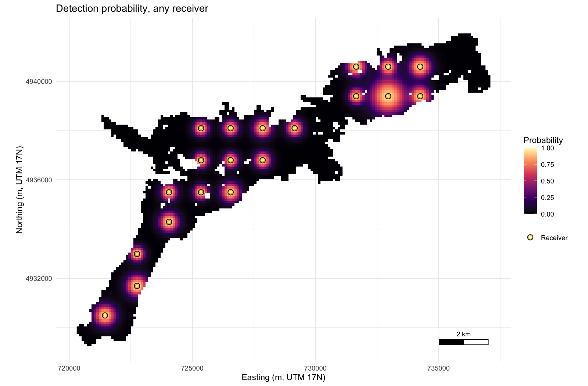
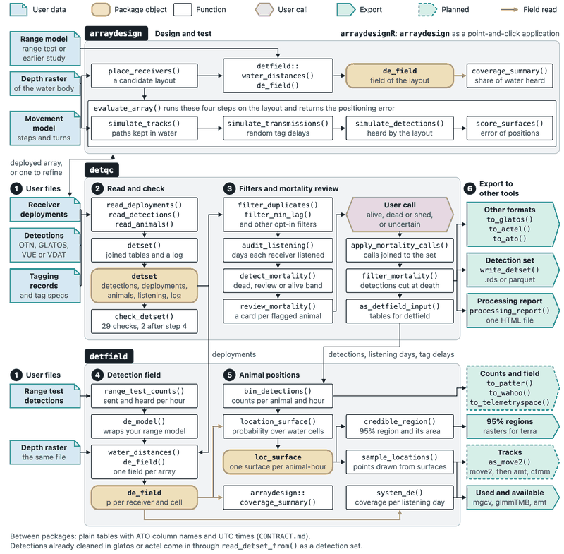

arraydesign designs acoustic receiver arrays and tests the performance of tracking systems on simulated animals, for a new study or for refining or auditing an array already in the water. It takes a depth raster of the water body, a range model and a set of receiver positions. The range model is your own model fitted to your range-test data and wrapped by de_model() of the detfield R package, or a stand-in curve from two distances made by detfield::de_logistic(). It returns the share of the water the array hears, how often simulated animals are detected, and how far positions estimated from their detections fall from the true tracks.
Install
# install.packages("remotes")
remotes::install_github(c("jakebrownscombe/detfield",
"jakebrownscombe/arraydesign"),
build_vignettes = TRUE, dependencies = TRUE)To install all four positionR packages at once, see the positionR landing page.
Example
Place 20 receivers on a grid over Stoney Lake, Ontario, the example data included with the package, and map the probability that the array hears a transmission from each water cell.
library(arraydesign)
# Read Stoney Lake: 100 m cells, depth zero or negative metres, land NA
lake <- terra::rast(system.file("extdata", "stoney_depth.tif",
package = "arraydesign"))
# Lay 20 receivers on a grid over water at least 1 m deep
deployable <- terra::ifel(abs(lake) < 1, NA, lake)
receivers <- place_receivers(deployable, n = 20, method = "grid", seed = 1)
# Set the range model: d50 and d05 at receivers 1 m and 35 m deep
range_model <- detfield::de_logistic(d50 = c(250, 750), d05 = c(500, 1500),
depth = c(1, 35))
# Build the detection field through water
field <- detfield::de_field(detfield::water_distances(lake, receivers),
range_model)
#> 52 of 2,304 receiver-cell pairs with p >= 0.05 have land on the
#> straight line between them; with blocked = 0 the curve is read on
#> them as if the line were clear. See `blocked` in ?de_model.
# Map the probability that any receiver hears, per water cell. plot() draws
# the receivers without a key, so the same rings are drawn again with one
ring <- detfield::positionr_ring_colours()
plot(field) +
ggplot2::geom_point(data = receivers, ggplot2::aes(shape = "Receiver"),
colour = ring[["edge"]], size = 2, stroke = 1.3) +
ggplot2::geom_point(data = receivers, ggplot2::aes(shape = "Receiver"),
colour = ring[["heard"]], size = 2, stroke = 0.6) +
ggplot2::scale_shape_manual(name = NULL, values = c(Receiver = 21))
Probability that at least one of the 20 receivers hears one transmission from each 100 m water cell of Stoney Lake.
Articles
- Design and test an array for Stoney Lake, the Get started page, places the receivers, maps coverage, sets a movement model, simulates detections and scores the positions.
- Design an array for your own water body starts from your own raster, station lists and range model, scores candidate layouts side by side and writes a station sheet for the field crew.
- Specifying and testing movement models sets a walk, a switch between moving and resting, and a start and goal for each animal.
-
Simulate and score an array step by step gives each stage of
evaluate_array()as a table you can inspect or change.
The suite
arraydesign is one of the four positionR packages, which share one example lake, one range model and one set of column names, as the diagram below shows.

- positionR, the suite
- detqc: read, check and filter detections.
- detfield: detection fields and positions.
- arraydesign: design and test the performance of tracking systems.
- arraydesignR: arraydesign as a point-and-click application.
Cite
Brownscombe JW (2026). positionR: tools for acoustic telemetry studies. R package version 2.0.0, https://jakebrownscombe.github.io/positionR/.
Brownscombe JW (2026). arraydesign: Acoustic Receiver Array Design and Track Simulation. R package version 0.1.1, https://jakebrownscombe.github.io/arraydesign/.